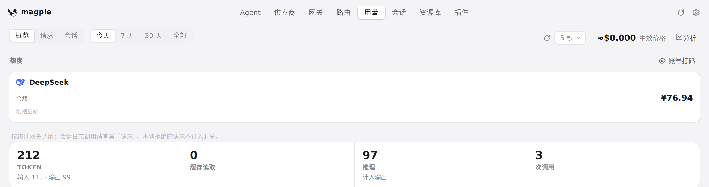
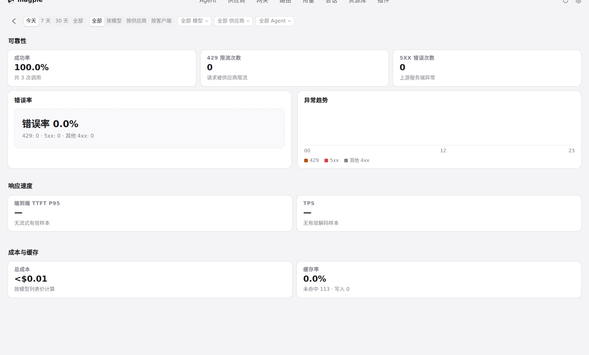
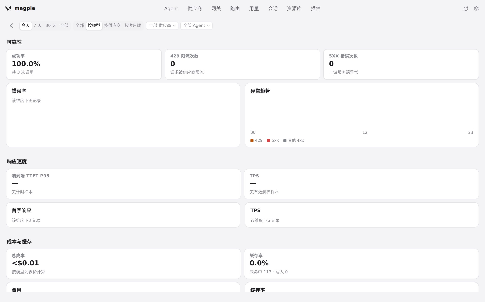
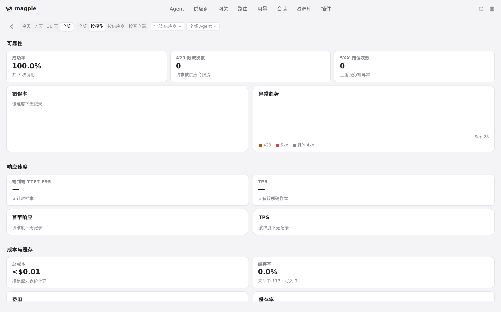

#704 界面预览
commit c16552c · 回到 PR · 用量页顶部新增「分析」入口（#openAnalytics），点开进入新的 #view-analytics 质量与分析看板：顶部是周期（今天/7 天/30 天/全部）与「全部 / 按模型 / 按供应商 / 按客户端」展示模式加筛选栏，下面按可靠性、响应速度、成本与缓存三个主题排布六张图表（错误率、异常趋势、TTFT P95、解码速度、成本、缓存率），并可展开调用明细与详情；本页复用全局「账号打码」。
红线是鼠标走过的轨迹，红色圆环是一次点击；底部文字是这一步在做什么。空格暂停，← → 逐段查看。

用量页入口与分析看板首屏 · 用量页顶部操作栏里新增的「分析」入口

用量页入口与分析看板首屏 · 看板首屏：周期、展示模式与三个主题区块

切换分组维度与周期 · 「按模型」模式下的六张图与筛选栏

切换分组维度与周期 · 周期为「全部」时看板重新聚合后的样子